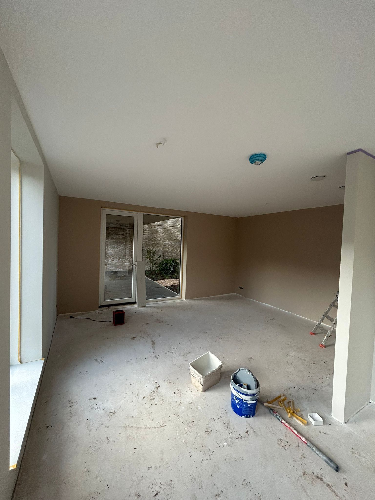
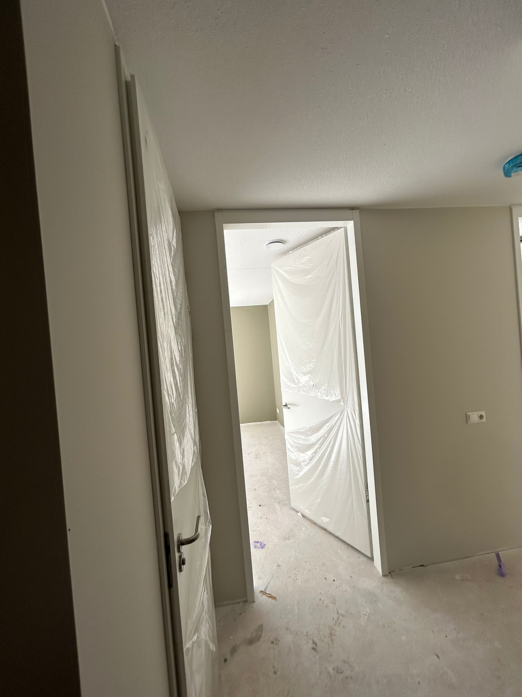

Schilderwerk, behangen en lakwerk, onder één dak, van voorbereiding tot oplevering.
Van muren en plafonds binnen tot gevels en houtwerk buiten. Een goede voorbehandeling bepaalt het resultaat: we schuren, gronden en werken met verf die jaren meegaat.

Een goed behangen wand begint bij een strakke ondergrond. Wij maken de muur klaar en brengen het behang naadloos en zonder bellen aan, van vlies tot een sfeerbepalend fotobehang.

Kozijnen, deuren, trappen en meubels verdienen een strakke, hoogwaardige afwerking. Wij lakken egaal en zonder strepen, en herstellen beginnende houtrot vóór het erger wordt.

Het verschil tussen 'mooi' en 'mooi blijven' zit in de voorbereiding. Daar nemen we de tijd voor.
We reinigen, schuren en maken de ondergrond egaal: de basis voor een strak en langdurig resultaat.
Kale plekken gronden, kleine reparaties en beginnende houtrot aanpakken vóór de afwerking.
Alles netjes afgeplakt en afgedekt, daarna strak afgewerkt met A-merk materiaal van Sigma & Sikkens.
Niet elke klus vraagt dezelfde verf. We adviseren u graag wat past bij uw ondergrond, ruimte en wens. Een overzicht van soorten die we vaak gebruiken.
Sneldrogend, weinig geur en milieubewust. Ideaal voor muren en plafonds, en steeds vaker ook voor houtwerk binnen.
Een harde, dekkende laag met diepe glans die sterk hecht op hout en metaal. Fijn bij intensief belast houtwerk.
Strak en naadloos gespoten, zonder roller- of kwaststructuur. Mooi voor deuren, kozijnen, radiatoren en plafonds.
Verf met fijne korrel of kiezel die oneffenheden verbergt en een voelbaar reliëf geeft. Slijtvast en sfeervol.
Matte, ademende verf op lijnoliebasis voor houten gevels, schuttingen en tuinhuizen. Gaat jaren mee en is eenvoudig bij te werken.
Per ruimte en gebruik kiezen we de juiste glans: mat voor een rustige look, zijdeglans of hoogglans waar het tegen een stootje moet.
Een fluweelmatte afwerking met veel karakter. Mooi voor meubels en accentdelen, met weinig voorbereiding.
Minerale, ademende verf met een matte, natuurlijke uitstraling en levendige, diepe muren.
Voor badkamer, keuken en vochtige ruimtes. Bestand tegen condens en gemaakt om schimmel tegen te gaan.
Vraag een vrijblijvende offerte aan, of test eerst een kleur in de 3D-kleurkiezer.